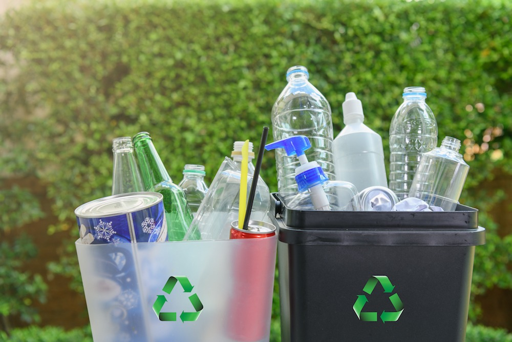

The Great Pacific Garbage Patch is a collection of marine debris in the North Pacific Ocean. Also known as the Pacific trash vortex, the garbage patch is actually two distinct collections of debris bounded by the massive North Pacific Subtropical Gyre. Marine debris is litter that ends up in the ocean, seas, and other large bodies of water.
Garbage Patches
These areas of spinning debris are linked together by the North Pacific Subtropical Convergence Zone, located a few hundred kilometers north of Hawaii. This convergence zone is where warm water from the South Pacific meets up with cooler water from the Arctic. The zone acts like a highway that moves debris from one patch to another.
The entire Great Pacific Garbage Patch is bounded by the North Pacific Subtropical Gyre. The National Oceanic and Atmospheric Administration (NOAA) defines a gyre as a large system of swirling ocean currents.
The amount of debris in the Great Pacific Garbage Patch accumulates because much of it is not biodegradable. Many plastics, for instance, do not wear down; they simply break into tinier and tinier pieces.
Garbage Patches
These areas of spinning debris are linked together by the North Pacific Subtropical Convergence Zone, located a few hundred kilometers north of Hawaii. This convergence zone is where warm water from the South Pacific meets up with cooler water from the Arctic. The zone acts like a highway that moves debris from one patch to another.
The entire Great Pacific Garbage Patch is bounded by the North Pacific Subtropical Gyre. The National Oceanic and Atmospheric Administration (NOAA) defines a gyre as a large system of swirling ocean currents.
The amount of debris in the Great Pacific Garbage Patch accumulates because much of it is not biodegradable. Many plastics, for instance, do not wear down; they simply break into tinier and tinier pieces.
Because the Great Pacific Garbage Patch is so far from any country’s coastline, no nation will take responsibility or provide the funding to clean it up. Charles Moore, the man who discovered the vortex, says cleaning up the garbage patch would “bankrupt any country” that tried it.
Mixed in with microplastics are larger pieces of plastic. Most plastics are refuse from land activities in North American and Asia. Some plastics are accidentally dumped from oceangoing vessels. All the plastics on this page were culled from the Great Pacific Garbage Patch.
No one knows how much debris makes up the Great Pacific Garbage Patch. The North Pacific Subtropical Gyre is too large for scientists to trawl. In addition, not all of the trash floats on the surface. Denser debris can sink centimeters or even several meters beneath the surface, making the vortex’s area nearly impossible to measure.
Recycling is the process of collecting and processing materials that would otherwise be thrown away as trash and turning them into new products. Recycling can benefit your community and the environment.
The more we recycle, the less garbage winds up in our landfills and incineration plants. By reusing aluminum, paper, glass, plastics, and other materials, we can save production and energy costs, and reduce the negative impacts that the extraction and processing of virgin materials has on the environment.
- Reduces the amount of waste sent to landfills and incinerators
- Conserves natural resources such as timber, water and minerals
- Increases economic security by tapping a domestic source of materials
- Prevents pollution by reducing the need to collect new raw materials
- Saves energy
- Supports American manufacturing and conserves valuable resources
- Helps create jobs in the recycling and manufacturing industries in the United States
Reducing is simply creating less waste. Making less waste to begin with means there’s less waste to clean up.

Reusing is taking old or unwanted items you might otherwise throw away and finding a new use for them.

Recycling is changing discarded materials into new products in order to avoid using more virgin resources.
An effective way to improve attitudes towards waste reuse and recycling is to integrate waste management education into school curriculum and particularly teaching children about the causes and consequences of waste disposal and highlighting the importance of waste prevention, reuse and recycling. Local authorities and/or waste management organisations can facilitate this by undertaking outreach activities, sending representatives to local schools or inviting schoolchildren to facility tours or open days, etc.
Best practice in awareness-raising is to effectively encourage waste prevention, reuse and recycling behaviour within the waste collection catchment area. Ultimately, this should translate into improved performance across key waste generation and separation indicators. Particular emphasis is placed on reaching all stakeholders, including non-native speakers via multilingual or pictorial communication ad via school activities.
Well designed and developed awareness campaigns may contribute to the overcome of the two main barriers to recycling; the lack of knowledge where information about proper waste segregation is communicated to the citizens and changing attitudes and perceptions and keep people motivated to avoid and sort waste.
The awareness campaigns for citizens can be delivered directly by the waste management organisation, by professional agencies on their behalf, or by partner organisations (including stakeholders in other sectors). A whole range of communication channels can be used, which can include advertising, public relations, direct marketing, community engagement, online engagement, social media and product labelling.
Last but not least, the improvement of the uptake of the waste management services results in better economic performance as well.